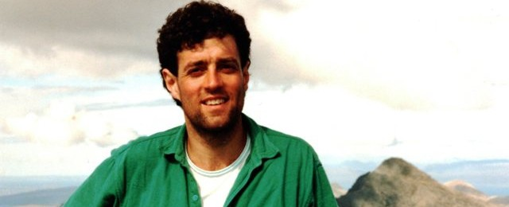

Search for a Munro using the search box or click a summit symbol on the map.
Green triangles indicate ascended Munros. Red triangles indicate Munros still to be ascended.
Click a photograph to view a larger image.
Use the Geograph link to view the original image and associated information.
Munro summit locations were originally derived from a dataset supplied by ESRI(UK) and have subsequently been reviewed and their positional accuracy improved.
Summit locations, ascent history and photographic references are maintained by JT.
JT's Munros records over 500 Munro ascents completed since 1985, including ten ascents of Ben Vorlich above Loch Earn.
OS Maps API © Ordnance Survey
Munro photographs sourced from Geograph Britain and Ireland.